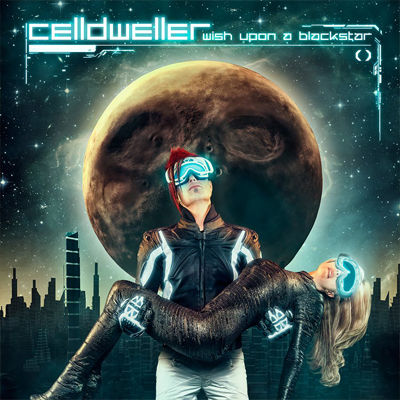

Celldweller
Wish Upon a Blackstar
Celldweller is a Detroit, Michigan-based musical project created by multi-instrumentalist artist, producer, songwriter, performer, programmer, and remixer Klayton. Celldweller songs have been featured in many films, movie trailers, television shows and video games.
Wish Upon a Blackstar is the second vocal album (third overall) from American electronic rock project, Celldweller.